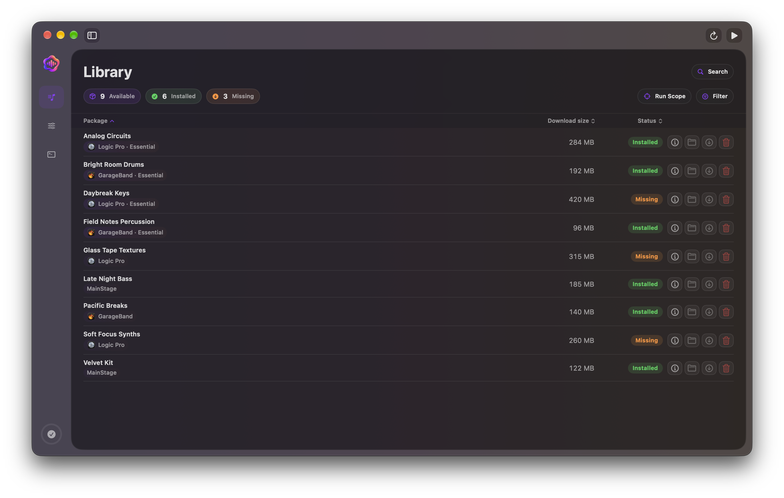
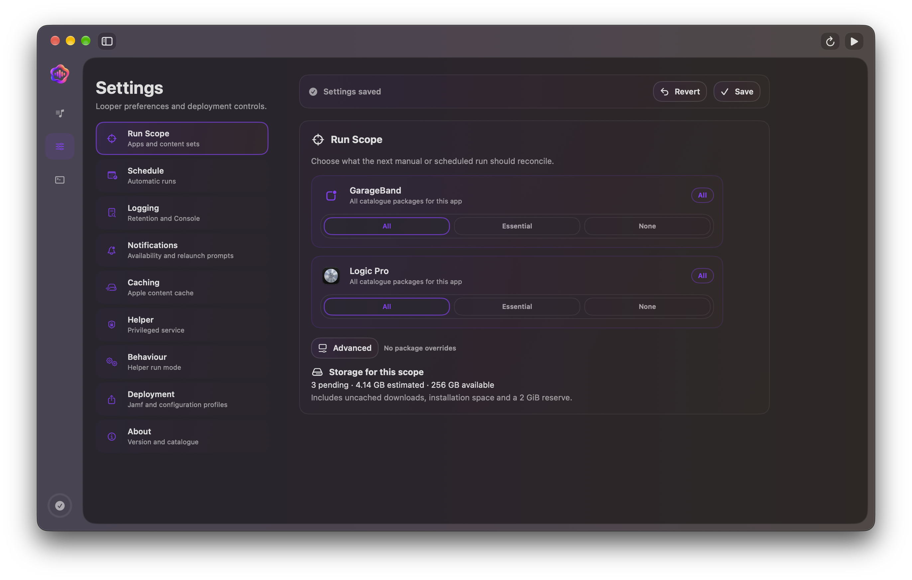
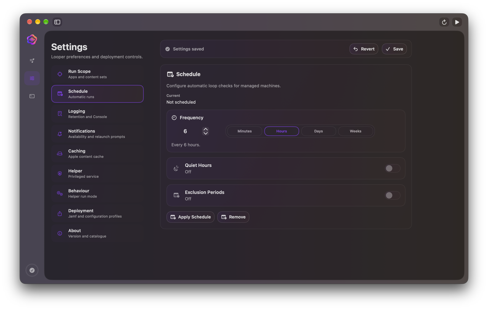
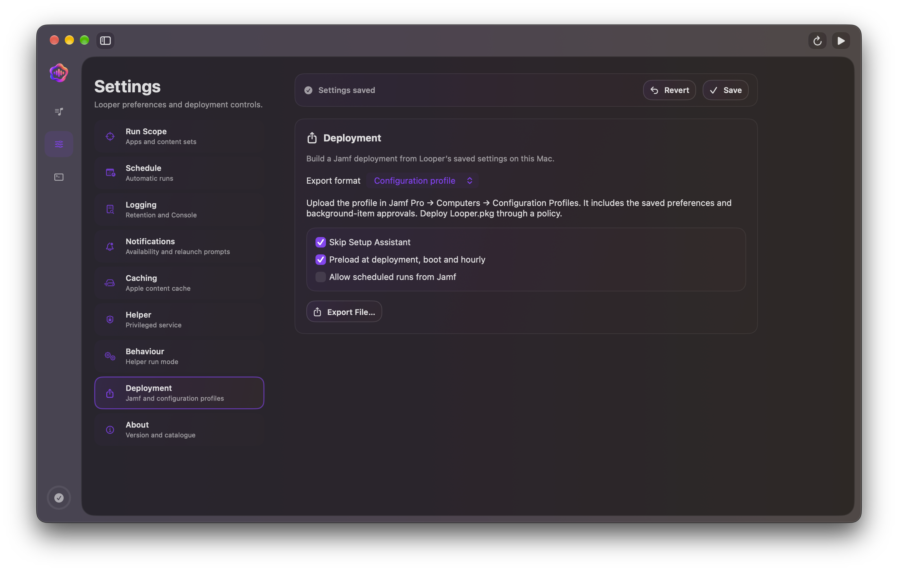

Manage your Mac’s
sound library.
Looper downloads and installs Apple sound packs for GarageBand, Logic Pro and MainStage. Choose the sounds you need on one Mac or across a music lab.
Requires macOS 15 or later

Settings
Set up your sound library.





